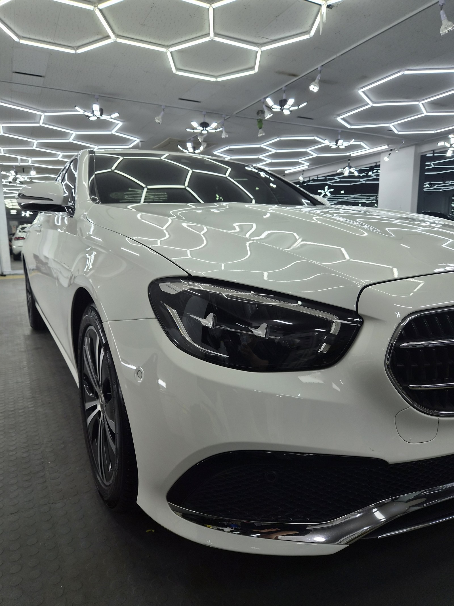
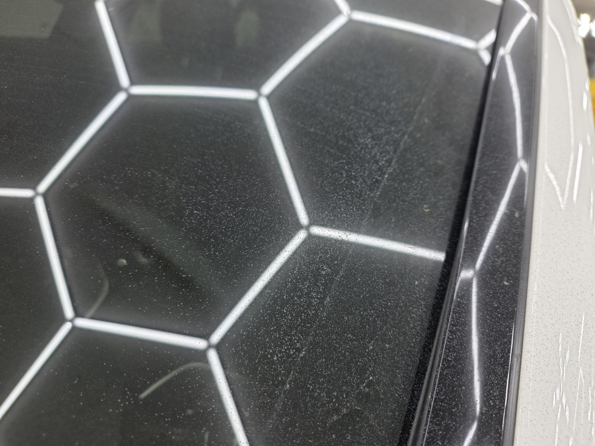
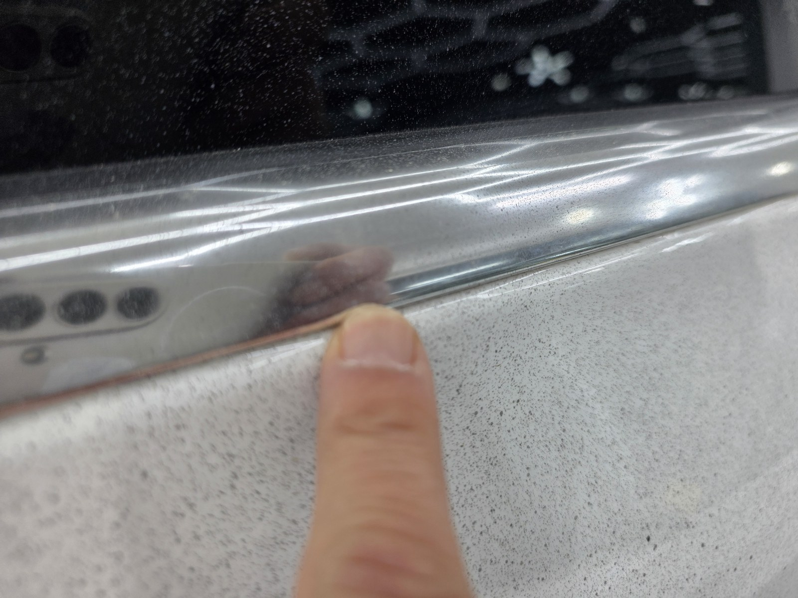
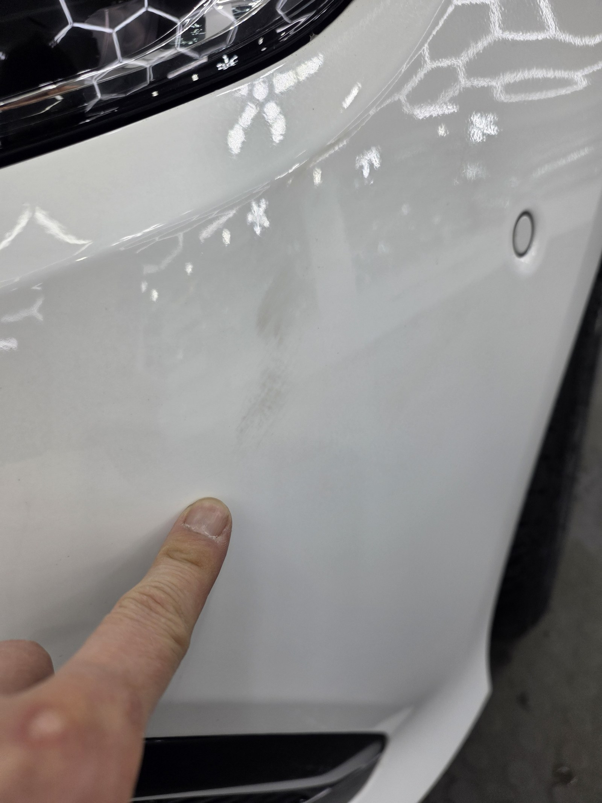
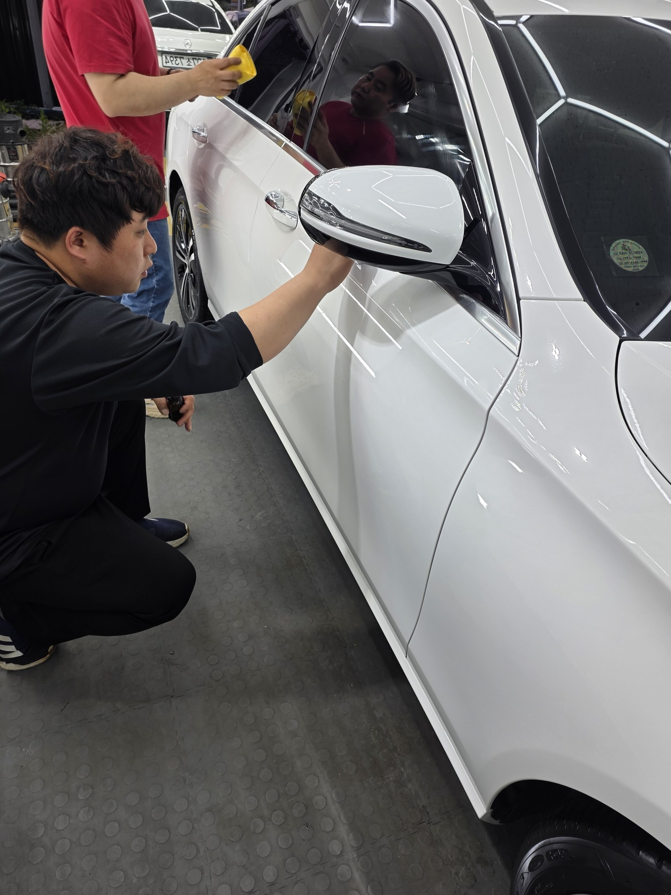
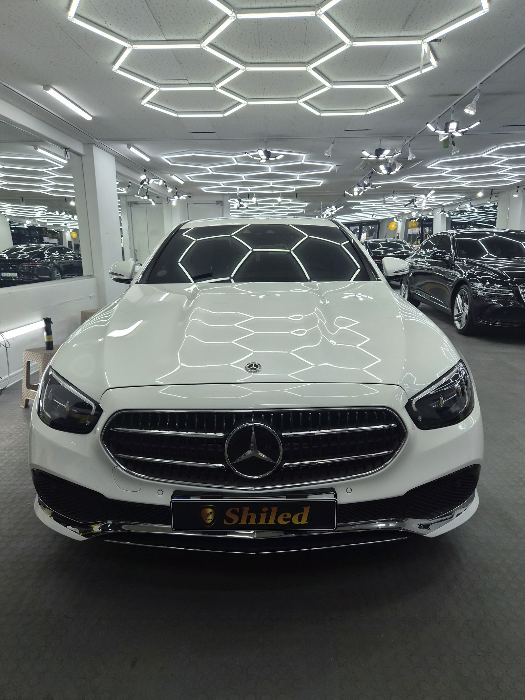
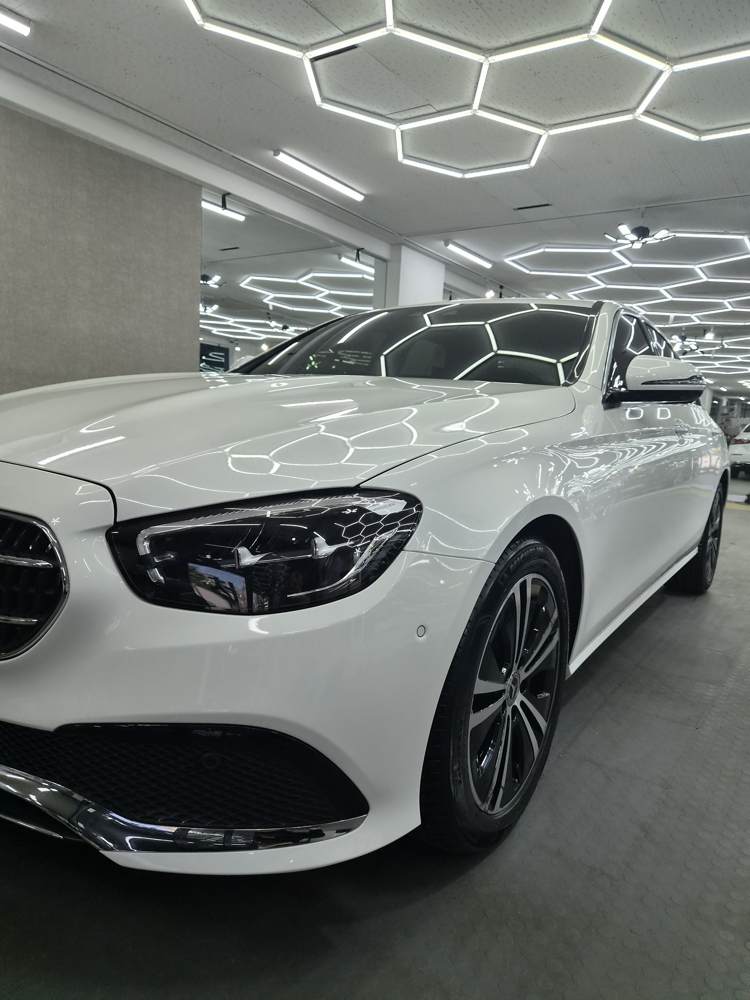
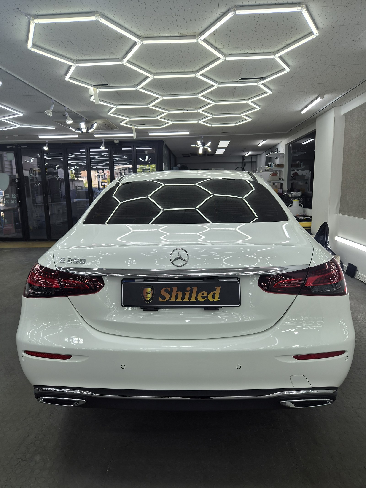
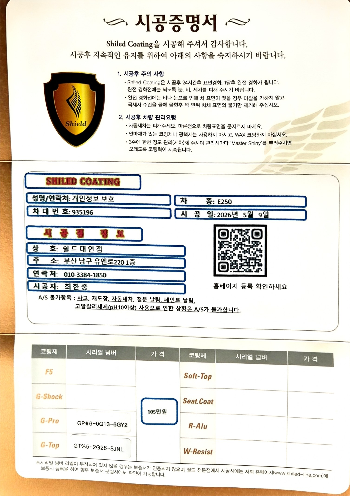

부산 광택 잘 하는 곳을 찾다가 오신 벤츠 E250 백색입니다.
세차장을 몇 번 다녀와도 도장면이 계속 부옇게 보인다고 하셨습니다.
매장 조명 아래 세워두고 보니 바로 답이 나왔습니다. 페인트 날림입니다.

부산 광택, 흰색 차량도 페인트 날림이 티가 나나요
눈으로만 보면 잘 안 보입니다. 그게 흰색 차의 함정입니다.
색상이 밝다 보니 도료 입자가 검정차처럼 도드라지지 않습니다. 그런데 저희 매장 조명처럼 방향성 있는 빛 아래 세우면 이야기가 달라집니다. 입자가 반사를 흩트려서 조명 라인이 다 갈라져 보입니다.

작업 전. 육각 조명이 매끈하게 이어져야 하는데 죄다 갈라져 보입니다
사진에서 보이는 뿌연 알갱이가 전부 굳은 도료입니다.
손끝으로 쓸어보면 답은 더 빨리 나옵니다.

손끝으로 훑어보면 사포처럼 걸립니다
부산 광택 전, 어디에 얼마나 앉아 있었나
루프만이 아니었습니다. 본넷에도 같은 상태가 있었습니다.
가까이서 보면 얼룩처럼 보이는 자국도 실은 굳은 도료가 뭉친 자리입니다. 손으로 짚어드리니 차주분도 그제야 손끝으로 느끼셨습니다.

본넷도 같은 상태였습니다
기술자의 팁
페인트 날림은 눈보다 손이 먼저 압니다. 손등이나 손끝으로 도장면을 쓸어보면 세차로는 안 지워지는 까끌거림이 바로 걸립니다. 흰색·밝은색 차일수록 눈으로는 넘어가기 쉬우니, 세차 후에도 표면이 계속 텁텁하게 느껴진다면 손으로 한 번 확인해 보시길 권합니다.
페인트 날림, 어떤 순서로 잡나요
바로 갈아내면 안 됩니다. 그게 제일 중요합니다.
굳은 입자가 도장면 위에 얹혀 있는 상태에서 패드를 대면, 그 입자가 연마재처럼 도장을 긁고 지나갑니다. 없던 상처를 만드는 셈입니다.
그래서 순서를 지킵니다.
① 디테일링 세차와 철분 제거로 표면 오염부터 걷어냅니다.
② 점토와 전용 약품으로 굳은 도료 입자를 하나씩 떼어냅니다.
③ 광택으로 그 과정에서 남은 미세 자국과 헤이즈를 정리합니다.
루프와 본넷은 면적이 넓어서 ②에 시간이 가장 많이 들어갑니다. 구역을 나눠서 같은 밀도로 훑어야 얼룩 없이 정리됩니다.
마감은 G-PRO + G-TOP 듀얼코팅으로
입자를 떼어낸 도장면은 그대로 두면 안 됩니다.
표면이 한 번 정리된 상태라 오염이 다시 앉기 쉽습니다. 그래서 G-PRO로 경도를 올리고 그 위에 G-TOP으로 발수·방오를 얹는 듀얼코팅으로 마감했습니다.
G-PRO는 스크래치 내성을 담당하고, G-TOP은 오염이 표면에 붙는 것 자체를 줄여줍니다. 같은 상태를 다시 겪지 않게 하려면 이 조합이 맞습니다. 코팅제는 제가 직접 개발·제조한 것으로 시공했습니다.

G-PRO와 G-TOP을 순서대로 도포하는 과정입니다
마감 후, 무엇이 달라졌나
입자에 부딪혀 갈라지던 반사가 곧게 이어지기 시작했습니다.
페인트 날림이 있는 도장면은 조명 라인이 항상 끊겨 보입니다. 빛이 입자에 걸려 산란하기 때문입니다. 입자를 걷어내면 같은 조명이 선으로 딱 이어집니다.

같은 루프, 작업 후. 육각 조명이 끊김 없이 이어집니다


작업 후 완료 상태입니다

시공증명서와 관리용 마스터샤이니를 함께 드립니다
자주 묻는 질문
Q. 벤츠 E250처럼 흰색 차도 페인트 날림이 티가 나나요?
A. 눈으로는 잘 안 보이지만 조명 아래 세우면 바로 드러납니다. 흰색은 색상 자체가 밝아서 도료 입자가 검정차만큼 도드라지지 않습니다. 하지만 매장 조명처럼 방향성 있는 빛을 받으면 표면에 앉은 입자가 반사를 흩트려서 그대로 드러나고, 손으로 쓸어보면 까끌거림도 바로 느껴집니다.
Q. 페인트 날림은 세차로 지워지지 않나요?
A. 지워지지 않습니다. 공중에 흩어진 도료가 미세한 방울 상태로 내려앉아 클리어코트 위에서 그대로 굳기 때문입니다. 물과 세제로는 표면 위 먼지만 씻겨나가고, 굳어버린 도료 입자는 그 자리에 그대로 박혀 있습니다.
Q. 페인트 날림 제거는 어떤 순서로 하나요?
A. 먼저 디테일링 세차와 철분 제거로 표면 오염을 걷어냅니다. 그다음 점토와 전용 약품으로 굳은 도료 입자를 물리적으로 떼어내고, 마지막에 광택으로 그 과정에서 생긴 미세 자국까지 정리합니다. 순서를 건너뛰고 바로 갈아내면 입자가 도장면을 긁고 지나갑니다.
Q. 페인트 날림 제거 후 코팅까지 해야 하나요?
A. 권합니다. 입자를 떼어내는 과정에서 클리어코트 표면이 한 번 정리되기 때문에, 그 상태 그대로 두면 오염이 다시 앉기 쉽습니다. 이번 E250은 G-PRO로 경도를 올리고 G-TOP으로 발수·방오를 얹는 듀얼코팅으로 마감했습니다.
Q. 쉴드광택 위치와 예약은 어떻게 하나요?
A. 부산 남구 유엔로220 1F 쉴드광택입니다. 예약·상담은 010-3384-1850, 대표 최한중이 직접 상담하고 책임 시공합니다.
손으로 쓸었을 때 까끌거린다면 그건 먼지가 아닙니다.
제품을 직접 만드는 사람이 직접 작업합니다.
부산에서 페인트 날림 제거와 광택을 고민 중이시면 편하게 연락 주십시오. 흰색·밝은색 차량 진단도 그대로 가능합니다.
어떤 차를 타냐보다 어떻게 타냐가 중요합니다~!
시공 중에는 전화를 받지 못할 때가 많습니다.
카카오톡으로 차종과 원하시는 시공을 남겨주시면 확인 후 답변드립니다.
쉴드광택 · 부산 남구 유엔로220 1F · 대표 최한중